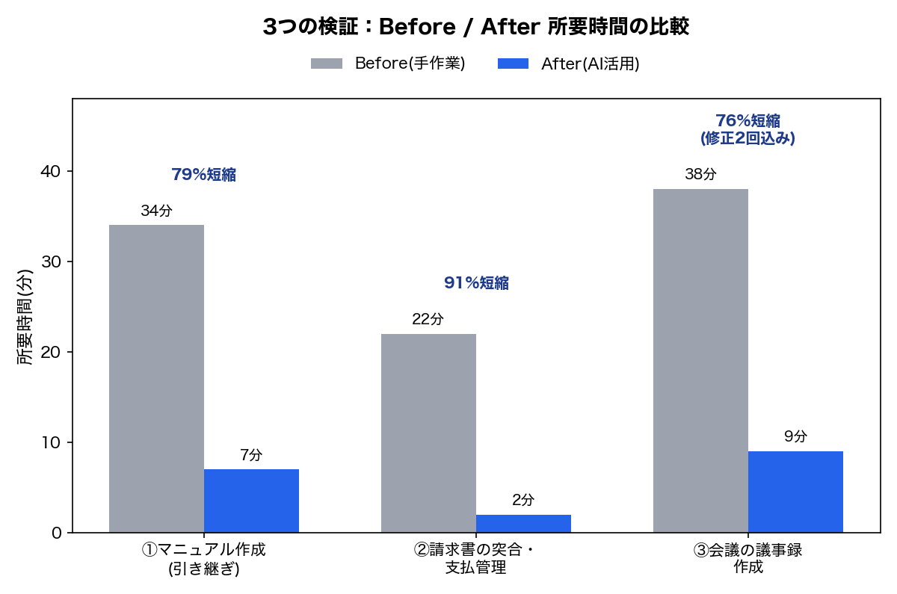

実証実験レポート
その事務作業、AIでここまで減らせます
属人化した引き継ぎ業務／請求書の突合・支払管理／会議の議事録、3つの業務で実際に検証しました
はじめに
- 実施主体:元・地方公務員としてバックオフィス実務(経理・総務・補助金審査等)に24年携わってきた立場で、AI活用の実証実験を行っている
- 使用したAIツール:Claude(Anthropic社のAIアシスタント、Claude Code)
- 検証方法について:検証はいずれも守秘義務に配慮し、実企業のデータではなく一般化・架空化した疑似案件で行っている
こんな業務、あなたの会社にもありませんか?
- 引き継ぎが担当者の頭の中にしかない
- 請求書チェックを毎月手作業で行っている
- 会議後の議事録作成に時間がかかる
経理・総務まわりの仕事は、一人の担当者が長年の経験と勘で回していることが少なくありません。担当者が急に休んだときの引き継ぎ、請求書の処理や支払い管理、会議の議事録――どれも「今のところ回っている」からこそ、見直す機会がないまま属人化しがちな業務です。
そうした業務を、実際にAIを使うとどれだけ変わるのか。3つのテーマで検証してみました。「AIなら最大91%削減できます」という話ではなく、「手直しのやり取りまで含めても76%短縮できた業務がある」という、実務に近い条件での結果を中心にお伝えします。
検証①:属人化した引き継ぎ業務
設定:経理担当者が長期療養で休職する物流会社(架空・従業員8名)を想定し、聞き取りメモ(約1,800字)から後任者向けの引き継ぎマニュアルを作成。
| 所要時間 | |
|---|---|
| Before(手作業でマニュアル作成) | 34分 |
| After(AI活用、生成〜確認〜承認まで) | 7分 |
| 改善率 | 約79%短縮(約4.9倍速) |
AIは聞き取りメモの内容を漏れなく構造化しただけでなく、「業務カレンダー」という独自の整理も加え、後任者が年間の流れをひと目で把握できる形に仕上げました。
検証②:請求書の突合・支払管理
設定:製造業(架空)を想定し、発注記録8件・届いた請求書10通(うち4件に意図的な不整合を混入)をもとに、支払予定表を作成。
| 所要時間 | |
|---|---|
| Before(手作業で突合・支払予定表作成) | 22分 |
| After(AI活用、生成〜確認〜承認まで) | 2分 |
| 改善率 | 約91%短縮(約11倍速) |
この検証で大事なのは時間よりも精度です。仕込んでおいた4つの不整合(金額不一致・重複請求・支払期日相違・発注記録のない請求書)は、AI・手作業のどちらも完全に検出しました。つまりAIは「見落としなく検出できる仕組み」として機能しています。買掛金・支払管理では、支払い遅延や二重払い、振込先の誤りが信用問題に直結します。AI活用の価値は「速さ」以上に「見落としを構造的に防げること」にあります。
自社に置き換えると:請求書処理のように毎月発生する業務であれば、この差は積み重なります。20分の短縮でも、月1回続けば年間で約4時間の差になる計算です(※実際の削減効果を保証するものではなく、単純換算の一例です)。
検証③:会議の議事録作成
設定:建設資材卸売業(架空)の月次定例会議(出席者5名)を想定し、会議の発言録(約1,700字)から議事録を作成。単なる文字起こしではなく、「前回決定事項の進捗」「本日の決定事項(担当者・期限)」「次回への申し送り」の3点を毎回引き継げる、議事録が"資産"として積み上がる形を目指した。
| 所要時間 | |
|---|---|
| Before(手作業で議事録作成) | 38分 |
| After(AI活用、生成〜確認〜修正〜承認まで) | 9分 |
| 改善率 | 約76%短縮(約4.2倍速) |
この検証では、AIが作った初稿に対して実際に2回の修正指示(議事概要が抜けていたための追加、読みやすさのための箇条書き化)を出し、やり取りを経て完成させています。検証①②は1回で承認に至ったケースでしたが、検証③は「実際に手直しをしながら完成させる」という、より実務に近いプロセスを含んだ計測です。
自社に置き換えると:月1回の定例会議であれば、この差(29分)は年間で約6時間相当になる計算です(※単純換算の一例です)。
3件の検証結果まとめ
| 検証テーマ | Before | After | 改善率 | 検証条件 |
|---|---|---|---|---|
| ①引き継ぎマニュアル作成 | 34分 | 7分 | 79%短縮 | 修正なし・一発承認 |
| ②請求書の突合・支払管理 | 22分 | 2分 | 91%短縮 | 修正なし・一発承認 |
| ③会議の議事録作成 | 38分 | 9分 | 76%短縮 | 修正2回込み(もっとも実務に近い条件) |

①②は「AIの初稿がそのまま採用された」場合の数字で、実際の業務では手直しが発生することも珍しくありません。③はその手直しまで含めた数字であり、3件の中でもっとも保守的・現実的な数値です。実際の効果を見積もる際は、③の約76%短縮を「実務に近い代表値」、①②の79%・91%は好条件下での参考実績として捉えていただくのが誠実だと考えています。
誠実にお伝えしたいこと
- 検証①(マニュアル化)のBefore(手作業)は、聞き取りメモの記載順を踏襲して簡潔にまとめた水準での計測です。より丁寧に作り込んだ場合、所要時間はさらに長くなった可能性があります
- 検証②(請求書処理)・検証③(議事録)のBefore(手作業)は、いずれも実務に近い丁寧さで作成されており、手を抜いた実施ではありません
- 検証①②はAIの初稿がそのまま承認された1回のみの計測、検証③は2回の修正を経た計測です。条件が異なるため、単純に数字だけを比較しないようご注意ください
- いずれも1件ずつの検証であり、再現性(複数回・条件を変えた試行)はまだ十分に検証できていません
- 業務内容や条件により結果は異なります。あくまで初回検証での結果、という位置づけでご覧ください
まとめ
3つの検証を通じて見えてきたのは、「担当者の頭の中にしかないやり方」を一度言語化・仕組み化するだけで、時間も、見落としのリスクも、大きく減らせるという可能性です。派手なシステム導入ではなく、今の業務のやり方を一緒に整理するところから、AI活用は始められます。
- ①業務の棚卸し:現在の業務を一緒に棚卸しし、どこが属人化しているかを整理する
- ②整理・言語化:棚卸しの結果から、マニュアル化・仕組み化すべき業務を洗い出す
- ③AI活用の選定:AIで効率化できる業務・できない業務を切り分け、優先順位をつけて提案する
「うちの場合はどうなるだろう」と思われた方は、まずは①の業務の棚卸しからお気軽にご相談ください。ご相談いただいた場合の最初の一歩は以下の通りです。
- まずは30分程度、現在の業務についてお聞かせください
- お伺いした内容をもとに、「AI化できそうな業務」と「AI化しない方がよい業務」を整理してお伝えします
AI業務改善ラボ 第1回実証実験(2026年8月17日)・第2回実証実験(2026年8月29日)・第3回実証実験(2026年9月4日)